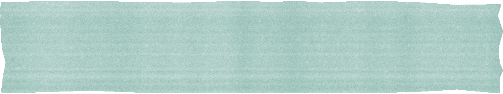

@fairhealth.br
Para o RH
Como levar a
fairhealth para
a sua empresa:
o passo a passo.
01
Diagnóstico integrado
No 1º mês
02
Escritório do Cuidado
Do 1º ao 12º mês
03
Mensuração
No 12º mês
Arraste para o lado →

@fairhealth.br
Passo 01
No 1º mês
Diagnóstico

integrado.
Antes de cuidar, entender a população: o perfil de saúde com a fairdata e a avaliação de risco por área e faixa etária.
Perfil de saúde · fairdata
Risco por área e faixa etária
Prioridades por evidência,
não por suposição.
01
@fairhealth.br
Passo 02
Do 1º ao 12º mês
O Escritório do Cuidado,

dentro da empresa.
Atendimento médico e psicológico num espaço físico, com médicos, psicólogos, assistentes sociais e felicitologistas em plantões alternados.
Anamnese e medições com bioimpedância e smartwatches.
Um Plano Individual do Cuidado para cada colaborador, com base na Medicina do Estilo de Vida, que também chega à empresa toda em workshops nos 7 pilares.
A proximidade aumenta a adesão.
A adesão gera resultado.
Conhece quem decide sobre saúde na sua empresa? Mande este post.
02
@fairhealth.br
Passo 03
No 12º mês
Mensuração

e consolidação.
Uma nova pesquisa da fairdata mostra a evolução dos indicadores, e sai o relatório de impacto para o financeiro e o plano de saúde.
Ao longo do ano, o RH acompanha com dados anonimizados e agregados no painel da fairdata.
Evolução dos indicadores
Dados anonimizados
03
@fairhealth.br
Para começar,

fale com um

especialista.
Dessa conversa sai uma proposta sob medida para o seu time, e a implementação começa com onboarding e primeiros atendimentos.
Comente CUIDADO e enviamos na DM como o Escritório do Cuidado funciona na sua empresa.

@fairhealth.br